ASIC Design and Synthesis
Documented 12/27/2025The projects are done under ECE337: ASIC Design Lab. This is a course with the most workload I had so far.
Totally three designs are made: UART Receiver + APB; FIR-filter + AHB; and USB 1.1 Bulk Transfer Type.
USB 1.1 Bulk Transfer Type
This project is done in a group of 3. Each member is responsible for one part of the design: AHB subordinate, Receiver, Transmitter + Data Buffer.
I am responsible for AHB subordinate, with Burst Transfer implemented. The burst transfer and hready is implemented according to chapter 3.6 and 3.7 from this.
AHB Subordinate
The top module RTL is shown below.

The AHB subordinate RTL is shown below.
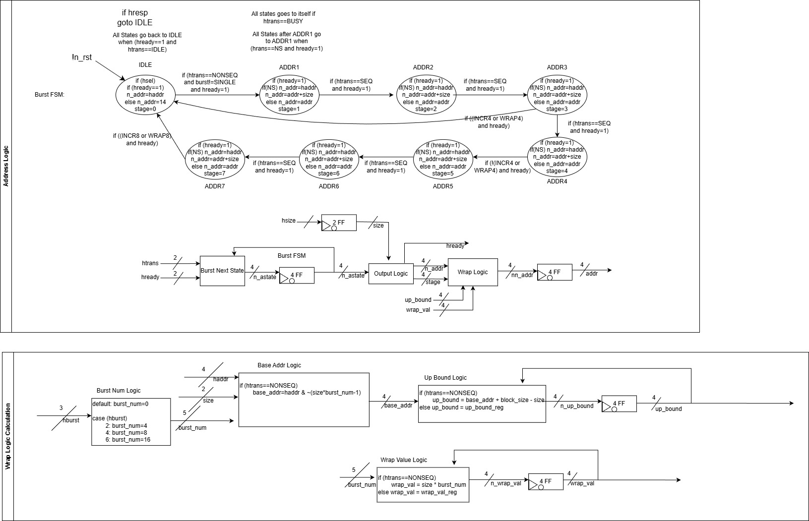 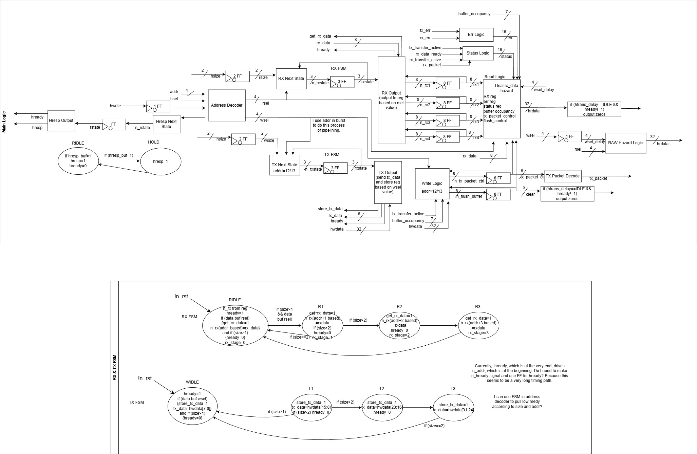The detailed description of the AHB wave form is shown below.
USB Receiver
This part of work is done by Yize Wang. RTL is shown below.
.png)
The wave for Receiver is here. the CRC and Bit Stuffing are implemented. I am not responsible for this part, so I cannot make a detailed video about it.
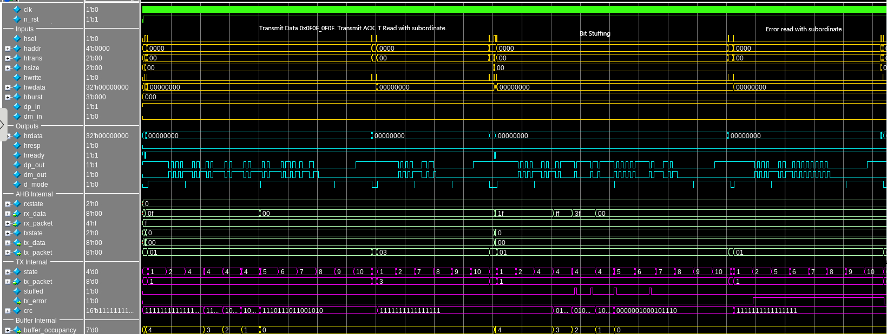USB Transmitter + Data Buffer
This part of work is done by Peter Zhou. RTL is shown below.
.png)
.png)
The wave for Transmitter is here. the CRC and Bit Stuffing are implemented. I am not responsible for this part, so I cannot make a detailed video about it.
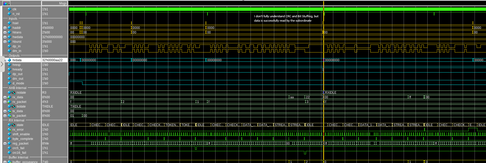FIR filter + AHB subordinate
FIR filter stands for Finite Impulse Response filter. According to the name, we can know that it is like a impulse sampling train with parameter in it. The implementation of this filter is 4-point filter with high pass behaviour. The image below shows the mathematical implementation. This implementation also has a AHB subordinate to communicate with the manager.
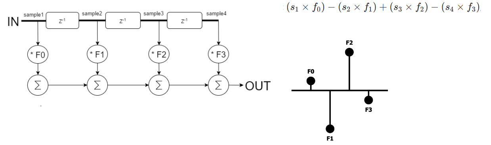FIR filter top module:
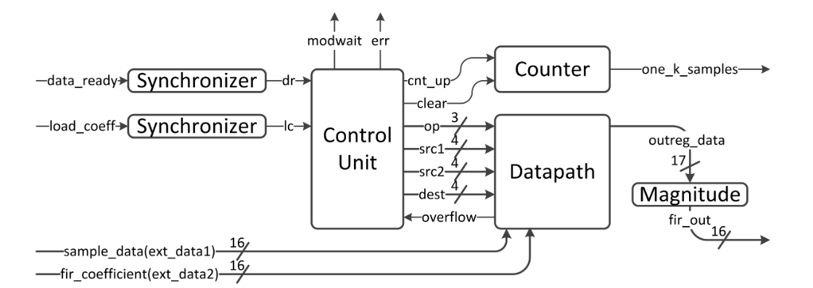FIR filter controller RTL and State Transition diagram:
 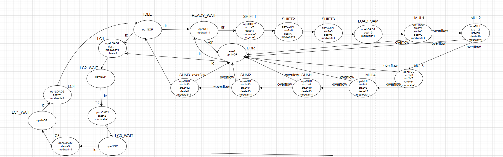
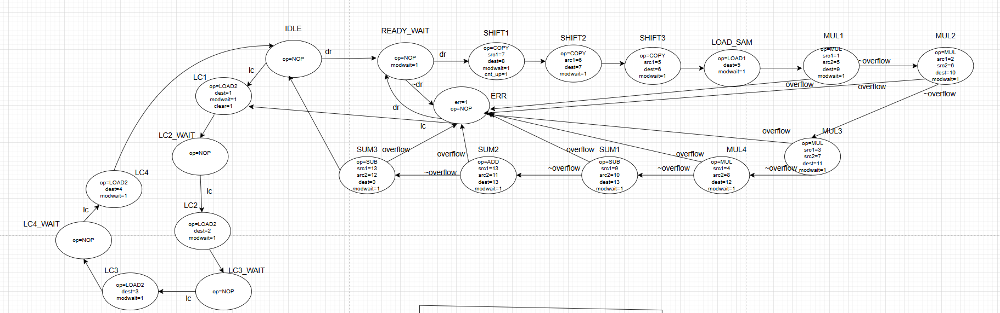
FIR filter magnitude RTL:
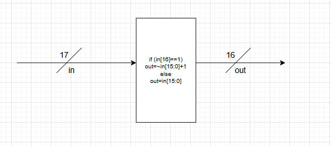FIR filter AHB subordinate top module:
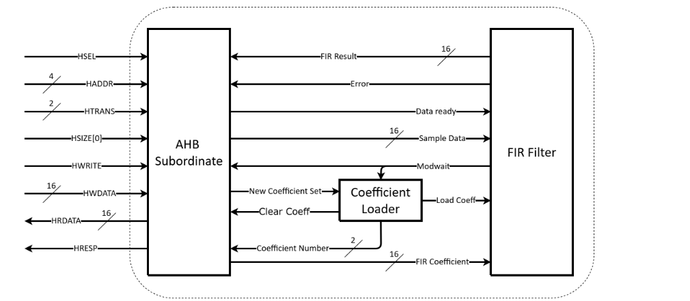FIR filter AHB subordinate RTL and coefficient loader Transition Diagram:

The design is synthesized, and pass the testcases in the course.
UART Receiver + APB subordinate
APB is also a Bus Protocal. The difference between this and the AHB is that AHB pipelined the address and data phase, while APB read address first and then read the data.
UART Receiver top module:
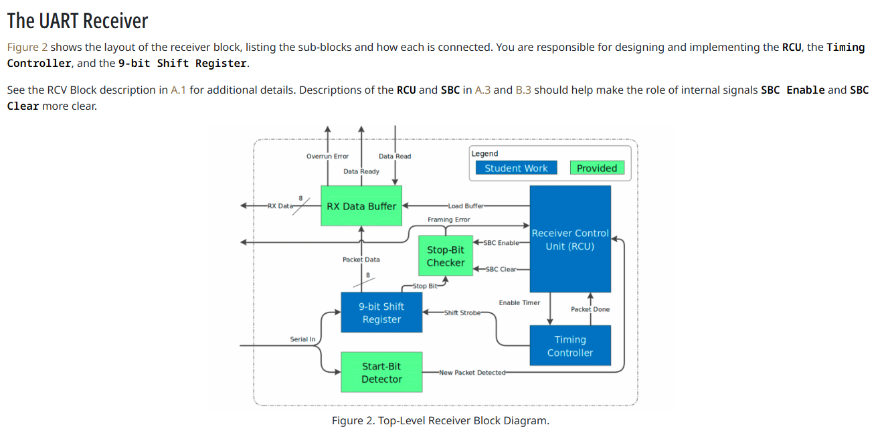UART Receiver RCU RTL and Transition Diagram:
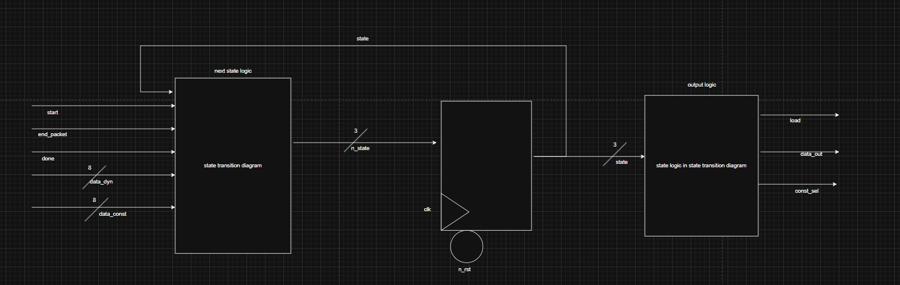 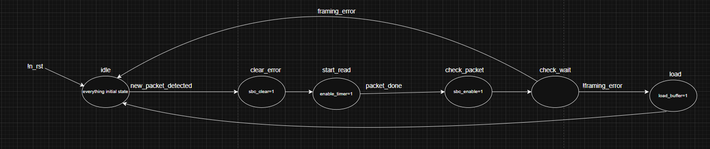UART Receiver Timer RTL:
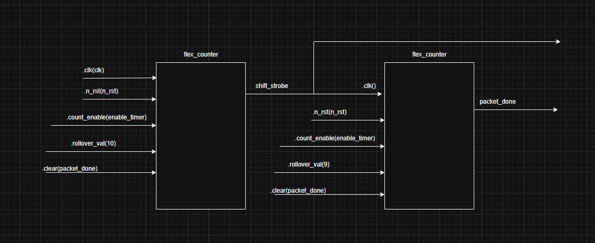UART Receiver APB Subordinate:
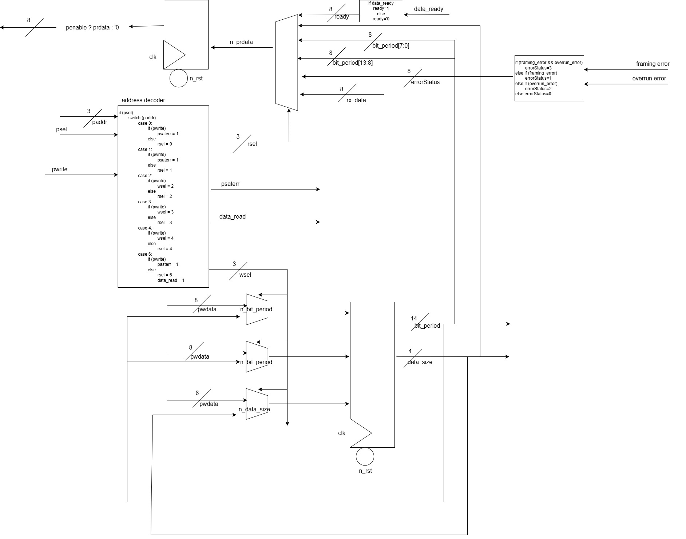The design is synthesized, and pass the testcases in the course.